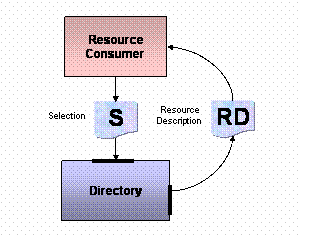

Selection instances contain a URI and a ranking of the resource description referenced by the URI. In-fact, it is more correct to say that the URI references a type called Artifact which is the base type for the two types ResourceDescription and Disclosure. A Disclosure is simply a value type that contains a resource description together with information detailing a verifiable act of registration. The decision to reference a resource description as opposed to a disclosure instance is based on policy of the resource provider, together with the internal policy of the registration and directory services.
Given a selection instance, the client invokes a resolve operation against the directory, enabling the conversation of the selection value to an associated resource description. The following illustration depicts the simple case of a selection directly referencing a resource description. Once the client has the resource description it can present this information as part of a web page or other client application context. .
Conversion of a selection instance to a resource description.
